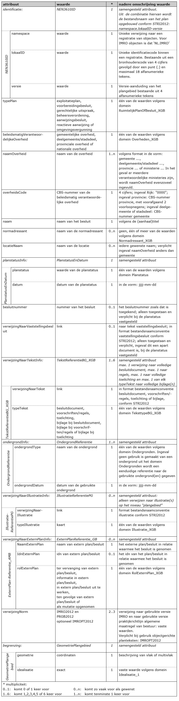
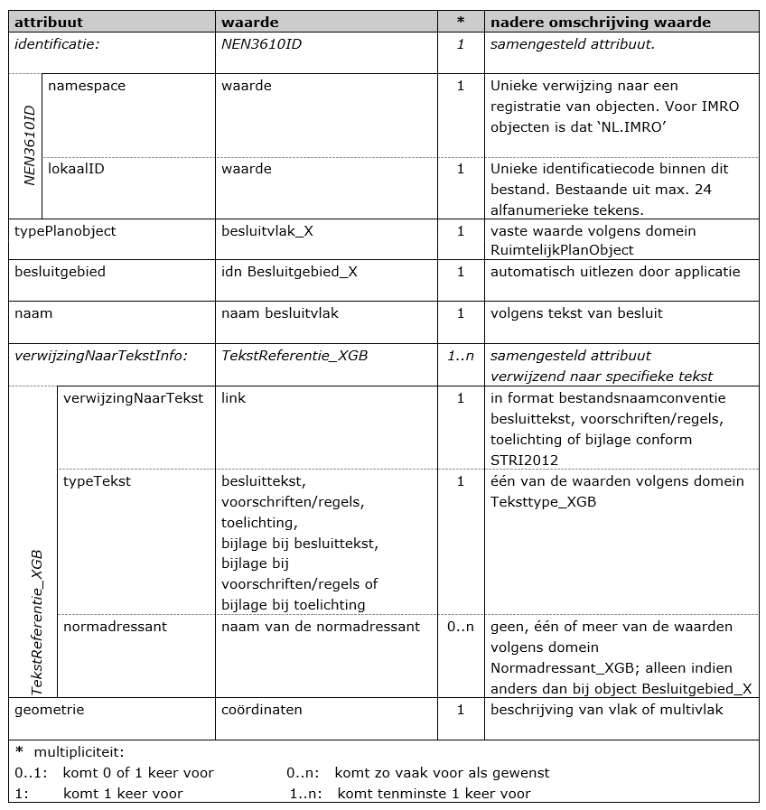
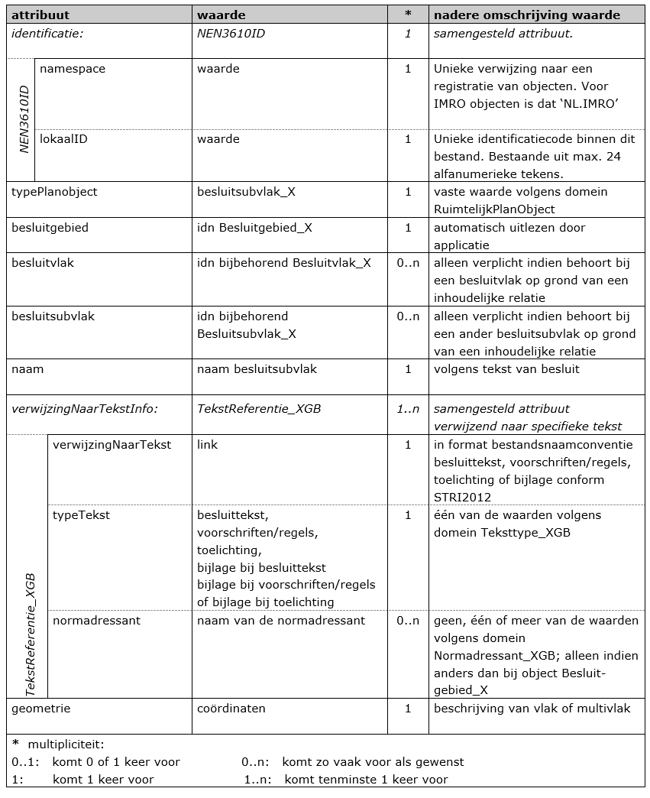

3.1 Klasse Besluitgebied_X
Het object Besluitgebied_X is het object dat de grenzen van het gebied, of de
gebieden, waarover het besluit uitspraken doet geometrisch vastlegt. De
geometrie daarvan is altijd een vlak of multivlak en altijd exact. Aan dit
object worden de algemene eigenschappen van het gebiedsgericht besluit als
attribuut gekoppeld.
In Tabel 3 zijn de attributen behorend bij de klasse Besluitgebied_X benoemd,
de waarden aangegeven die deze attributen moeten bevatten en is aangegeven of
het gebruik van het attribuut verplicht is en of het attribuut meerdere malen
mag worden gebruikt. Ook is aangegeven of attributen in samenhang moeten worden
gebruikt. Na de tabel is per attribuut een nadere toelichting gegeven.
In Hoofdstuk 5 is voor per type gebiedsgerichte besluit een nadere uitwerking
gegeven van Tabel 3.
Tabel 3 Klasse Besluitgebied_X 1*

identificatie (verplicht):
Ieder ruimtelijk instrument kent een eigen identificatienummer (idn). Deze
identificatie maakt het mogelijk dat op landelijk niveau een uniek onderscheid
voor ieder instrument aanwezig is. Voor het geval het werkingsgebied bestaat uit
meerdere ruimtelijk gescheiden gebieden kent het totaal van die gebieden één
identificatienummer. De geometrie van het object Besluitgebied_X is hierbij
een multipolygoon.
Het samengestelde attribuut verwijst naar het object NEN3610ID bestaande uit de
attributen namespace, lokaalID en versie.
- Namespace: (verplicht)
Een unieke verwijzing naar een registratie van objecten. Voor IMRO objecten is dat ‘NL.IMRO’.
- lokaalID: (verplicht)
Unieke identificatiecode binnen de registratie van ruimtelijke plannen. Bestaande uit een bronhouderscode van 4 cijfers (voor het Rijk 0000, voor gemeente het CBS-nummer) gevolgd door een punt (.) en maximaal door de bronhouder te bepalen 18 alfanumerieke tekens. Er geldt de volgende
reguliere expressie: [0-9]{4}\.[A-Za-z0-9]{1,18}
- Versie: (verplicht)
Versie-aanduiding van het plangebied bestaande uit 4 alfanumerieke tekens door de bronhouder te bepalen. Er geldt de volgende reguliere expressie:
[A-Za-z0-9]{4}
Uit de waarden van de attributen namespace, lokaalID en versie wordt de
bestandsnaam van het plan opgebouwd conform STRI2012:
namespace.lokaalID-versie. De samengestelde reguliere expressie is:
NL\.IMRO\.[0-9]{4}\.[A-Za-z0-9]{1,18}-[A-Za-z0-9]{4}
typePlan (verplicht):
Voor het attribuut typePlan wordt het domein RuimtelijkPlanOfBesluit_XGB
gebruikt. Hier wordt een van de volgende waarden ingevuld:
- aanwijzingsbesluit;
- beheersverordening;
- exploitatieplan;
- gerechtelijke uitspraak;
- omgevingsvergunning (voormalig Wro projectbesluit);
- reactieve aanwijzing;
- voorbereidingsbesluit.
beleidsmatigVerantwoordelijkeOverheid (verplicht):
Hier wordt de overheid die beleidsmatig verantwoordelijk is voor het opstellen
van het plan opgenomen uit het domein Overheden_XGB. In dit geval een van de
volgende vaste waarden:
- gemeentelijke overheid;
- deelgemeente/stadsdeel;
- provinciale overheid of;
- nationale overheid.
naamOverheid (verplicht):
Hier wordt de naam van de beleidsmatig verantwoordelijke overheid opgenomen, in
de vorm van de tekst “gemeente …….”, “deelgemeente ……”, “stadsdeel ……”,
“provincie …….” Of “ministerie …….”. In het geval er meerdere verantwoordelijke
ministeries zijn, wordt naamOverheid evenzoveel ingevuld.
overheidsCode (verplicht):
Teneinde kenbaar te maken van welke beleidsmatig verantwoordelijke overheid het
gebiedsgerichte besluit is, wordt hier het viercijferige CBS-nummer van die
overheid opgenomen. Voor deelgemeenten/stadsdelen wordt het nummer gebruikt van
de gemeente waartoe zij behoren. Voor de provincies worden, voorafgaand aan het
CBS-nummer van de provincie, twee voorloopnegens geplaatst, zodat de totale
lengte 4 posities bedraagt. Voor het Rijk wordt het nummer “0000” gebruikt.
Naam (verplicht):
In het waardeveld van het attribuut naam dient de volledige naam van het
gebiedsgerichte besluit te worden opgenomen zoals deze volgens de
(aanhaal)titel daarvan wordt genoemd. De volledige naam wordt gebruikt. Indien
er sprake is van een aanhaaltitel in het besluit dan wordt deze gebruikt.
Normadressant (indien gewenst):
Dit attribuut geeft aan op welke organen of rechtspersonen de regeling zich
richt. Het domein Normadressant_XGB geeft de toegestane waarden aan waaruit
eventueel meerdere kunnen worden gekozen.
locatieNaam (indien gewenst/voorwaardelijk verplicht):
Het kan gewenst zijn om de geografische naam van de locatie waarbinnen de
gebiedsgericht besluit zich bevindt kenbaar te maken. De naam (namen) van die
relevante locatie (bv. Groene Hart) kan bij dit attribuut worden ingevuld. Het
is verplicht het attribuut locatieNaam te gebruiken voor zover het een
plan/besluit betreft dat door een provincie wordt opgesteld of voor zover het
plan / besluit door het Rijk wordt opgesteld.
planstatusInfo (verplicht):
Dit attribuut is noodzakelijk om de plangegevens te kunnen plaatsen naar tijd en
belang. Het samengesteld attribuut planstatus verwijst naar het object PlanstatusEnDatum, bestaande uit de attributen planstatus en datum. In
Hoofdstuk 5 is per gebiedsgericht besluit aangegeven welke status een instrument
kent. Dit kan in het geval van een gerechtelijke uitspraak bijvoorbeeld alleen vastgesteld zijn.
- Planstatus (verplicht)
Het domein Planstatus geeft de toegestane waarden voor het attribuut planstatus waaruit er één moet worden gekozen. De waarde van dit attribuut geeft de planstatus weer.
- Datum- (verplicht)
Het attribuut datum is bedoeld om de proceduredatum van het plan op te nemen. De in het waardeveld op te nemen datum dient overeenkomstig het binnen het IMRO afgesproken datumformaat te worden genoteerd: jjjj-mm-dd.
besluitnummer (onder voorwaarde verplicht):
Nummer van het vaststellingsbesluit van het besluit / plan. Het besluitnummer is
alleen toegestaan en dan verplicht indien de planstatus vastgesteld is.
verwijzingNaarVaststellingsbesluit (onder voorwaarde verplicht):
Hierin wordt een link opgenomen naar de tekst van het vaststellingsbesluit. In
het format conform de bestandsnaamconventie vaststellingsbesluit volgens de
STRI2012.
Het vaststellingsbesluit betreft de tekst waarin is aangegeven door wie, op welk
moment welk besluit is vastgesteld. Het vaststellingsbesluit wordt aan het
Besluitgebied_X gekoppeld wanneer het besluit de status vastgesteld heeft.
Bij een andere (eerdere) planstatus is dit attribuut niet toegestaan.
Aan het bestand kunnen ook eventueel bij het vaststellingsbesluit behorende
bijlagen worden toegevoegd.
verwijzingNaarTekstInfo (verplicht):
Dit attribuut verwijst naar het samengestelde attribuut TekstReferentieBG_XGB,
bestaande uit de attributen verwijzingNaarTekst en typeTekst. Attribuut
wordt met de volgende cardinaliteit opgenomen:
- Maximaal 1 verwijzing naar het volledige besluitdocument en/of;
- Maximaal 1 verwijzing naar volledige toelichting en/of;
- Maximaal 1 verwijzing naar eventuele volledige regels;
- 0..1 verwijzing naar de volledige bijlagen van elk typeTekst:
- De volledige bijlage bij de regels;
- De volledige bijlage bij het besluitdocument;
- De volledige bijlage bij de toelichting.
Het aantal verwijzingen naar teksten is beperkt. De raadpleger van de plannen
heeft daar baat bij, omdat hij dan niet direct geconfronteerd wordt met een
mogelijk lange lijst van verwijzingen. Daarom moet er maximaal één verwijzing
zijn naar het volledige besluitdocument, maximaal één verwijzing naar de
volledige toelichting en maximaal één naar de volledige regels. Daarnaast mag er
maximaal één verwijzing zijn naar alle eventuele bijlagen, gegroepeerd naar
bijlage bij besluitdocument, toelichting en/of regels. Er mag worden verwezen
naar een inhoudsopgave of index, waardoor indirect meer mogelijkheden aanwezig
zijn.
De bronhouder kiest voor het al dan niet gebruik van objectgerichte planteksten.
Uit de waarde van het attribuut typeTekst (onderdeel van het attribuut
verwijzingNaarTekstInfo) blijkt wat voor tekst het betreft. Voor zowel
niet-objectgerichte als objectgerichte planteksten wordt dit attribuut
verwijzingNaarTekstInfo gebruikt. De keuze voor XML of HTML/PDF planteksten
geldt niet alleen voor het besluitgebied, de keuze geldt ook voor de andere
objecten (besluitvlakken/ besluitsubvlakken) binnen het gebiedsgericht besluit.
De keuze wordt vastgelegd met behulp van het attribuut verwijzingNorm bij
BesluitGebied_X van dit gebiedsgericht besluit. Het format dient overeenkomstig
de afspraak over de bestandsnaamconventies conform de STRI2012 te zijn.
- verwijzingNaarTekst (verplicht)
Dit attribuut is bedoeld om (hyper)links te kunnen opnemen. Hier dient een (hyper)link naar het soort document dat is aangegeven bij het attribuut
- typeTekst te worden opgenomen. Het format dient overeenkomstig deafspraak over de bestandsnaamconventies voor het bestandstype besluitdocument, toelichting, regels of bijlagen conform de STRI2012 te zijn.
- typeTekst (verplicht)
Hiermee wordt aangegeven om wat voor type tekst het gaat. Per verwijzing naar tekst dient gekozen te worden uit een van de volgende waarden van het domein TeksttypeBG_XGB:
- besluitdocument;
- voorschriften/regels;
- toelichting;
- bijlage bij besluitdocument;
- bijlage bij voorschriften/regels;
- bijlage bij toelichting.
De regels voorzien (bijvoorbeeld bij een beheersverordening) in aanvullende gebruiks-, dan wel bouwregels voor het betreffende object. Regels kunnen voorkomen bij een beheersverordening, exploitatieplan en een voorbereidingsbesluit.
Het besluitdocument is het totaal document aan tekst bij het besluit en
heeft betrekking op het volledige besluit. Het besluitdocument wordt
gekoppeld aan aanwijzingsbesluit (proactieve aanwijzing), reactieve
aanwijzing, gerechtelijke uitspraak, voorbereidingsbesluit en
omgevingsvergunning. Wanneer een besluitdocument is gekoppeld aan het Besluitgebied_X, wordt een deel van het besluitdocument, de besluittekst,
gekoppeld aan het Besluitvlak_X en Besluitsubvlak_X (zover deze voorkomt).
De toelichting is de onderbouwing van het besluit en kan als zelfstandige
tekst (de toelichting) worden gekoppeld aan het object of als onderdeel van
het besluitdocument (d_[idn]) gekoppeld worden aan het object Besluitgebied_X.
ondergrondInfo (verplicht, zo vaak als gewenst):
Dit attribuut verwijst naar het samengestelde attribuut Ondergrondreferentie,
bestaande uit de attributen ondergrondType en ondergrondDatum. Met dit
attribuut wordt, conform artikel 1.2.4 Bro, aangegeven welke ondergrond bij het
vaststellen van het besluit is gebruikt.
Er zijn meerdere waarden mogelijk.
- ondergrondType (verplicht)
Het type van de gebruikte ondergrond volgens het domein Ondergronden. Op
grond van de Wet basisregistratie grootschalige topografie (BGT) is het per
1 juli 2017 voor bestuursorganen verplicht om gebruik te maken van de Basisregistratie Grootschalige Topografie (BGT). Een bestuursorgaan kan
daar indien nodig gemotiveerd van afwijken. Bij afwijking kan het
bestuursorgaan gebruik maken van:
- basisregistratie topografie (BRT)
- basisregistratie kadaster (BRK)
Indien geen gebruik is gemaakt van een ondergrond uit het domein
Ondergronden, dan wordt de naam van het bestand van de gebruikte
ondergrond(en) als vrije tekst opgegeven. In de PRTRI2012, hoofdstuk 7, is
toegelicht welke bestandformaten voor de ondergrond kunnen worden gebruikt.
- ondergrondDatum (verplicht)
De datum van de gebruikte ondergrond.
verwijzingNaarIllustratieInfo (zo vaak als gewenst):
Dit attribuut is bedoeld om de verbeelding van het gebiedsgerichte besluit (het
kaartbeeld, de kaartbeelden ingeval dit er meer zijn) zoals deze is vastgesteld,
op te nemen. Het attribuut verwijst naar het samengestelde attribuut
IllustratieReferentie_XGB, bestaande uit de attributen:
- verwijzingNaarIllustratie (verplicht)
Dit attribuut is exclusief bedoeld om hyperlinks te kunnen opnemen. Hier
dient een hyperlink naar de illustratie waarbij het object behoort te
worden opgenomen. Het format dient overeenkomstig de bestandsnaamconventie
voor het bestandstype illustratie conform de STRI2012 te zijn.
- typeIllustratie (verplicht)
Hierin wordt het type van de illustratie vastgelegd: om wat voor soort
illustratie het gaat. Hier is uitsluitend de vaste waarde kaart volgens
het domein Illustratie_XGB toegestaan.
verwijzingNaarExternPlanInfo (zo vaak als gewenst):
Dit attribuut wordt gebruikt om de relatie met een ander instrument of
bijvoorbeeld uitspraak vast te leggen. In Hoofdstuk 5 is dit per gebiedsgericht
besluit toegelicht.
Dit attribuut verwijst naar het samengestelde attribuut ExternPlanReferentie,
bestaande uit de attributen:
- naamExternPlan (verplicht)
Hier wordt de naam van het externe plan (besluit) waarnaar verwezen wordt
opgegeven. Dit kan een specifieke naam zijn indien deze bekend is, maar ook
een algemene benaming.
- idnExternPlan (indien aanwezig)
In het geval een identificatie (idn) van het externe plan (besluit) waarnaar
verwezen wordt bekend is, wordt deze idn hier worden opgenomen.
- rolExternPlan (verplicht)
Hierin wordt de betekenis van het externe plan (besluit) ten opzichte van
het hier betreffende gebiedsgerichte besluit vastgelegd. Het betreft hier
een van de volgende vaste waarden uit het domein RolExternPlan_XGB:
- als mutatie opgenomen in het geval er sprake is van een mutatieplan van
een beheersverordening, een en ander als uiteengezet in hoofdstuk 4.1 van
deze praktijkrichtlijn;
- ter vervanging van extern plan/besluit in het geval het een gedeeltelijke
herziening van een beheersverordening betreft, een en ander als uiteengezet
in paragraaf 4.1 van deze praktijkrichtlijn;
- informatie in extern plan/ besluit in het geval de aanleiding voor dit
nieuwe besluit is gegeven in een ander plan, besluit, visie of bijvoorbeeld
een rapport;
- in extern plan/besluit uit te werken in geval het gebiedsgerichte besluit
dat als gevolg dient te hebben;
- ten gevolge van extern plan/besluit in geval het gebiedsgerichte besluit
een gevolg is van een ander plan (besluit).
verwijzingNorm (verplicht):
Teneinde de zekerheid te hebben welke technische status de data hebben, is het
noodzakelijk dat wordt aangegeven aan welke IMRO versie de gegevensset voldoet.
Tevens moet een verwijzing worden opgenomen naar de gebruikte versie van de
praktijkrichtlijn. In het geval objectgerichte planteksten (XML) onderdeel zijn
van de het gebiedsgericht besluit, dan wordt ook de verwijzing naar de standaard
voor planteksten opgenomen.
Het attribuut verwijzingNorm dient minimaal twee keer te worden opgenomen
met de verwijzing naar de betreffende versies in het waardeveld: IMRO2012 en
PRGB2012. Bij het gebruik van objectgerichte planteksten in dit ruimtelijk plan
moet ook worden opgenomen: IMROPT2012.
Geometrie (verplicht):
Het object Besluitgebied kent uitsluitend de geometrie van een vlak of
multivlak (multipolygoon). Dit attribuut kent daarom coördinaten in een
vastgesteld format (gml) en kan door een applicatie automatisch worden
gegenereerd.
3.2 Klasse Besluitvlak_X
Het besluitvlak is het belangrijkste object (klasse) binnen het besluitgebied.
Er komt altijd tenminste één object Besluitvlak_X voor, die in dat geval
dezelfde geometrie zal hebben als het object Besluitgebied_X. De geometrie van
een object Besluitvlak_X is altijd een vlak of multivlak en altijd exact. De
eigenschappen van dit object worden bepaald door een aantal attributen dat aan
dat object wordt gekoppeld.
In Tabel 4 zijn de attributen behorend bij de klasse Besluitvlak_X benoemd, de
waarden aangegeven die deze attributen moeten bevatten en is aangegeven of het
gebruik van het attribuut verplicht is en of het attribuut meerdere malen mag
worden gebruikt. Ook is aangegeven of attributen in samenhang moeten worden
gebruikt. Na de tabel is per attribuut een nadere toelichting gegeven.
Tabel 4 Klasse besluitvlak_X 1..n*

identificatie (idn) (verplicht):
Elk object Besluitvlak_X krijgt een eigen unieke identificatie binnen het
gebiedsgerichte besluit. Het samengestelde attribuut identificatie verwijst
naar het object NEN3610ID bestaande uit de attributen namespace en lokaalID.
- Namespace: (verplicht)
Een unieke verwijzing naar een registratie van objecten. Voor IMRO objecten
is dat ‘NL.IMRO’.
- lokaalID: (verplicht)
Door de bronhouder te bepalen unieke identificatiecode binnen de context van
het bestand bestaande uit maximaal 32 alfanumerieke tekens. Toegestane
tekens: {”A”…”Z”, “a”…”z”, ”0”…”9”, “_”, “- “, “,”, ”.”}.
typePlanobject (verplicht):
Het attribuut typePlanobject maakt het via het bijbehorende domein
RuimtelijkPlanobject mogelijk aan te geven welk object het betreft. Hier
wordt de vaste waarde besluitvlak_X ingevuld.
besluitgebied (verplicht):
Voor elk object is een verwijzing noodzakelijk naar het object Besluitgebied_X
waar het object deel van uitmaakt. Dit attribuut verwijst daartoe naar het
attribuut identificatie van het bijbehorende object Besluitgebied_X. Dit zal
automatisch binnen een applicatie gestalte kunnen krijgen.
naam (verplicht):
Aan het attribuut naam wordt als waarde een representerende naam van het
object meegegeven, mogelijk zoals deze in de tekst die ernaar verwijst is
opgenomen. Niet altijd zal dit het geval zijn. In dat geval zal een zinvolle
onderscheidende naam moeten worden ingevuld, zodat het object voor gebruikers
herkenbaar is en de gebruiker hierop desgewenst kan classificeren.
verwijzingNaarTekstInfo (verplicht, zo vaak als gewenst):
Het attribuut is bedoeld voor het verwijzen naar specifieke tekst die behoort
bij het betreffende object Besluitvlak_X. Het attribuut verwijst naar het
samengestelde attribuut TekstReferentie_XGB, bestaande uit de attributen
verwijzingNaarTekst, typeTekst en normadressant.
De bronhouder kiest voor dezelfde vorm van planteksten als bij het object
Besluitgebied_X: objectgericht in XML of niet-objectgericht in HTML formaat.
Het format dient overeenkomstig de afspraak over de bestandsnaamconventies
conform de STRI2012 te zijn. De keuze van de bonhouder wordt vastgelegd in de
verwijzingNorm bij dit gebiedsgericht besluit.
- verwijzingNaarTekst (verplicht)
Dit attribuut is bedoeld om (hyper)links te kunnen opnemen. Hier dient een
(hyper)link naar het soort document dat is aangegeven bij het attribuut typeTekst te worden opgenomen.
Voor de waarde van het attribuut verwijzingNaarTekst geldt dat geen
elementen van een directorystructuur/pad mogen worden opgenomen. Wel moet
een nadere precisering naar de plaats binnen een document te worden
opgenomen met behulp van een fragmentidentifier. Het fragment in de
hyperlink is de locatie in de plantekst (XML of HTML) waar het van
toepassing zijnde attribuut typeTekst betrekking op heeft. Een hyperlink
krijgt dan de vorm: bestandsnaam.xml#fragmentof
bestandsnaam.htm#fragment.
- typeTekst (verplicht)
Hiermee wordt aangegeven om wat voor type tekst het gaat. Per verwijzing
naar tekst dient gekozen te worden uit een van de volgende waarden van het
domein Teksttype_XGB:
- besluittekst;
- voorschriften/regels;
- toelichting;
- bijlage bij besluittekst;
- bijlage bij voorschriften/regels;
- bijlage bij toelichting.
Wanneer een besluitdocument is gekoppeld aan het Besluitgebied_X, wordt
een deel van het besluitdocument, de besluittekst, gekoppeld aan het Besluitvlak_X en Besluitsubvlak_X (zover deze voorkomt).
normadressant (zo vaak als gewenst)
Dit attribuut geeft aan op welke organen of rechtspersonen de regeling zich
richt. Het domein Normadressant_XGB geeft de toegestane waarden aan waaruit
één of meerdere kunnen worden gekozen. Indien deze waarde hier wordt opgegeven
treedt deze waarde in de plaats van de waarde die bij het object
Besluitgebied_X is opgegeven.
geometrie (verplicht)
Het object Besluitvlak_X kent uitsluitend de geometrie van een vlak of
multivlak (multipolygoon). Dit attribuut kent daarom coördinaten in een
vastgesteld format (gml) en kan door een applicatie automatisch worden
gegenereerd.
3.3 Klasse Besluitsubvlak_X
Naast objecten van het type Besluitvlak_X kunnen ook objecten van het type
Besluitsubvlak_X voorkomen. Deze geven een nadere betekenis aan een gedeelte
van een of meer objecten Besluitvlak_X of aan een of meer andere objecten
Besluitsubvlak_X. Het object Besluitsubvlak_X kan zo vaak voorkomen als
gewenst. De geometrie daarvan is altijd een vlak of multivlak en altijd exact.
De eigenschappen van dit object worden bepaald door een aantal attributen dat
aan dat object wordt gekoppeld.
In Tabel 5 zijn de attributen behorend bij de klasse Besluitsubvlak_X benoemd,
de waarden aangegeven die deze attributen moeten bevatten en is aangegeven of
het gebruik van het attribuut verplicht is en of het attribuut meerdere malen
mag worden gebruikt. Ook is aangegeven of attributen gekoppeld worden, dat wil
zeggen altijd in samenhang moeten worden gebruikt. Na de tabel is per attribuut
een nadere toelichting
Tabel 5 Klasse Besluitsubvlak_X 0..n*

identificatie (idn) (verplicht):
Elk object Besluitsubvlak_X krijgt een eigen unieke identificatie binnen het
gebiedsgerichte besluit. Het samengestelde attribuut identificatie verwijst
naar het object NEN3610ID bestaande uit de attributen namespace en lokaalID.
- namespace: (verplicht)
Een unieke verwijzing naar een registratie van objecten. Voor IMRO objecten
is dat ‘NL.IMRO’.
- lokaalID: (verplicht)
Door de bronhouder te bepalen unieke identificatiecode binnen de context van
het bestand bestaande uit maximaal 32 alfanumerieke tekens. Toegestane
tekens: {”A”…”Z”, “a”…”z”, ”0”…”9”, “_”, “- “, “,”, ”.”}.
typePlanobject (verplicht):
Het attribuut typePlanobject maakt het via het bijbehorende domein
RuimtelijkPlanobject mogelijk aan te geven welk object het betreft. Hier
wordt de vaste waarde Besluitsubvlak_X ingevuld.
besluitgebied (verplicht):
Voor elk object is een verwijzing noodzakelijk naar het object Besluitgebied_X
waar het object deel van uitmaakt. Dit attribuut verwijst daartoe naar het
attribuut identificatie van het bijbehorende object Besluitgebied_X. Dit zal
automatisch binnen een applicatie gestalte kunnen krijgen.
besluitvlak (onder voorwaarde verplicht):
Een object Besluitsubvlak_X heeft op grond van een inhoudelijke relatie altijd
betrekking op minimaal één object Besluitvlak_X of op minimaal één ander
object Besluitsubvlak_X. Indien dit object Besluitsubvlak_X geen betrekking
heeft op een ander object Besluitsubvlak_X, dan dient met dit attribuut het
idn van het onderliggende object Besluitvlak_X waar dit object
Besluitsubvlak_X betrekking op heeft, te worden ingevuld. Dit attribuut moet
meerdere keren worden gebruikt als het object betrekking heeft op meerdere
onderliggende objecten Besluitvlak_X.
besluitsubvlak (onder voorwaarde verplicht):
Objecten van het type Besluitsubvlak_X kunnen op grond van een inhoudelijke
relatie betrekking hebben op andere onderliggende objecten Besluitsubvlak_X.
Indien dat het geval is, dient met dit attribuut het idn van deze onderliggende
objecten Besluitsubvlak_X te worden opgenomen.
naam (verplicht):
Aan het attribuut naam wordt als waarde een representerende naam van het
object meegegeven, mogelijk zoals deze in de tekst die ernaar verwijst is
opgenomen. Niet altijd zal dit het geval zijn. In dat geval zal een zinvolle
onderscheidende naam moeten worden ingevuld, zodat het object voor gebruikers
herkenbaar is en de gebruiker hierop desgewenst kan classificeren.
verwijzingNaarTekstInfo (verplicht, zo vaak als gewenst):
Het attribuut is bedoeld voor het verwijzen naar specifieke tekst die behoort
bij het betreffende object Besluitsubvlak_X. Het attribuut verwijst naar het
samengestelde attribuut TekstReferentie_XGB, bestaande uit de attributen
verwijzingNaarTekst, typeTekst en normadressant.
De bronhouder kiest voor dezelfde vorm van planteksten als bij het object
Besluitgebied_X: objectgericht in XML of niet-objectgericht in HTML formaat.
Het format dient overeenkomstig de afspraak over de bestandsnaamconventies
conform de STRI2012 te zijn. De keuze van de bonhouder wordt vastgelegd in de
verwijzingNorm bij dit gebiedsgericht besluit.
- verwijzingNaarTekst (verplicht)
Dit attribuut is bedoeld om (hyper)links te kunnen opnemen. Hier dient een
(hyper)link naar het soort document dat is aangegeven bij het attribuut typeTekst te worden opgenomen.
Voor de waarde van het attribuut verwijzingNaarTekst geldt dat geen
elementen van een directorystructuur/pad mogen worden opgenomen. Wel moet
een nadere precisering naar de plaats binnen een document te worden
opgenomen met behulp van een fragmentidentifier. Het fragment in de
hyperlink is de locatie in de plantekst (XML of HTML) waar het van
toepassing zijnde attribuut typeTekst betrekking op heeft. Een hyperlink
krijgt dan de vorm: bestandsnaam.xml#fragmentof
bestandsnaam.htm#fragment.
- typeTekst (verplicht)
Hiermee wordt aangegeven om wat voor type tekst het gaat. Per verwijzing
naar tekst dient gekozen te worden uit een van de volgende waarden van het
domein Teksttype_XGB:
- besluittekst;
- voorschriften/regels;
- toelichting;
- bijlage bij besluittekst;
- bijlage bij voorschriften/regels;
- bijlage bij toelichting.
Wanneer een besluitdocument is gekoppeld aan het Besluitgebied_X, wordt
een deel van het besluitdocument, de besluittekst, gekoppeld aan het Besluitvlak_X en Besluitsubvlak_X (zover deze voorkomt).
normadressant (zo vaak als gewenst)
Dit attribuut geeft aan op welke organen of rechtspersonen de regeling zich
richt. Het domein Normadressant_XGB geeft de toegestane waarden aan waaruit
één of meerdere kunnen worden gekozen. Indien deze waarde hier wordt opgegeven
treedt deze waarde in de plaats van de waarde die bij het object
Besluitgebied_X is opgegeven.
geometrie (verplicht)
Het object Besluitsubvlak_X kent uitsluitend de geometrie van een vlak of
multivlak (multipolygoon). Dit attribuut kent daarom coördinaten in een
vastgesteld format (gml) en kan door een applicatie automatisch worden
gegenereerd.


 Figuur 1 Objectenstructuur
Figuur 1 Objectenstructuur